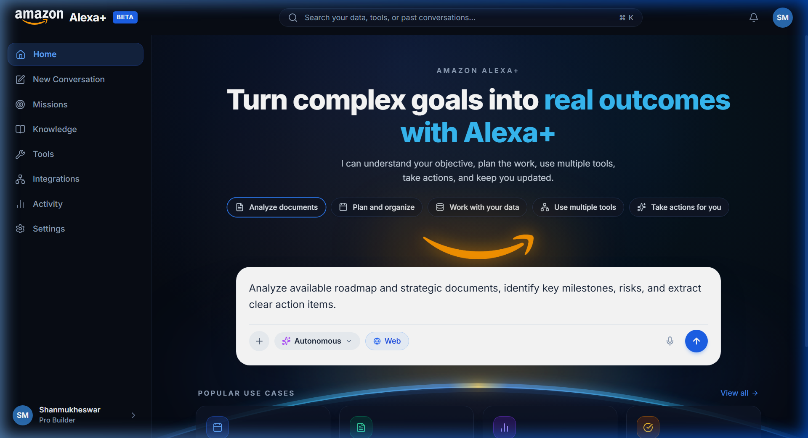
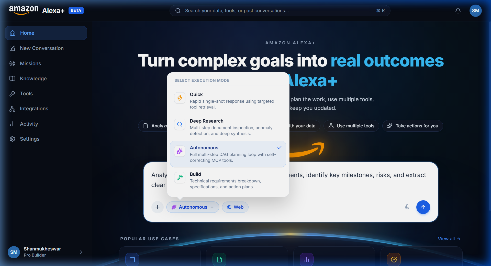
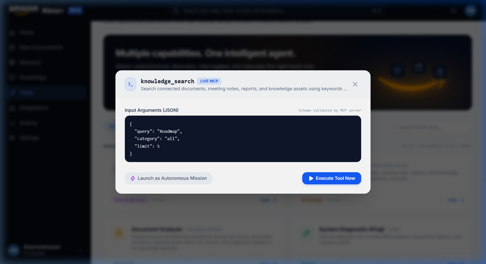
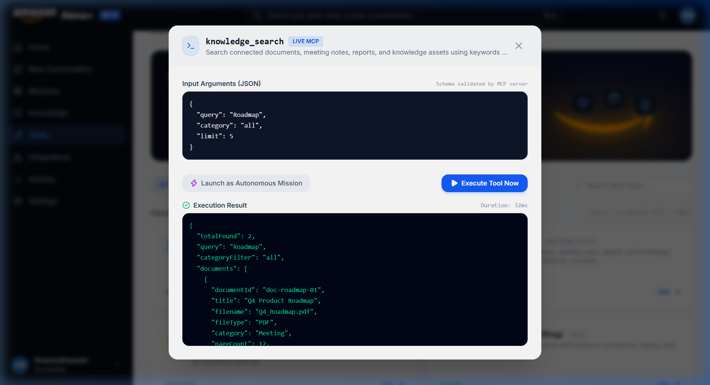
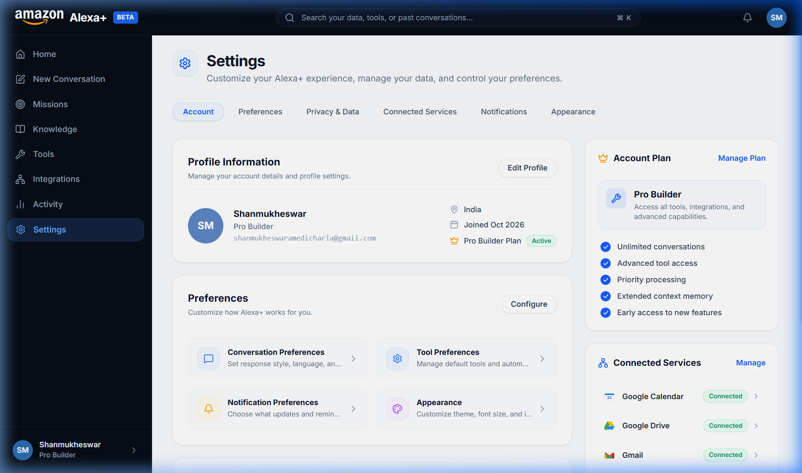

Comprehensive Master Project Dossier & Current State Blueprint
Prepared for Shanmukheswar | Hackathon 2026 Submission
This project is an Alexa+-inspired autonomous agentic assistant platform built around the official Model Context Protocol (MCP) Streamable HTTP specification (spec 2025-11-25+). Rather than simulating tool execution through static chat prompts, the platform connects an agent orchestrator to an independent self-hosted MCP server (:3001/mcp) over HTTP with dynamic capability discovery and persistent SQLite state tracking.
USER (Browser)
│
▼
SIMULATED ASSISTANT WEB APP
(React 19 + TypeScript + Tailwind CSS)
│
HTTP / SSE Streaming
│
▼
APPLICATION API SERVER
(Express on Port 3000)
│
▼
AGENT ORCHESTRATOR
┌────────────┼────────────┐
│ │ │
Understand Plan Verify
│ │ │
└────────────┼────────────┘
│
MCP CLIENT LAYER
│
Streamable HTTP Transport
POST /mcp (SSE)
│
▼
SELF-HOSTED MCP SERVER
(Port 3001/mcp - Spec 2025-11-25+)
┌────────────┼────────────┐
▼ ▼ ▼
calendar_get knowledge_ document_
events search analyze
│ │ │
└────────────┼────────────┘
│
▼
LOCAL PERSISTENCE
(SQLite: data/alexa_plus.db)
| Component | User Interaction | Underlying Execution | Grounding |
|---|---|---|---|
| Natural Composer | Prompt typing, keyboard submit (Ctrl+Enter), popular use case pills. | Generates conversation ID and mission entity via POST /api/missions. |
SQLite relational persistence |
| Execution Modes | ChatGPT-style dropdown: Quick, Deep Research, Autonomous, Build. | Instructs orchestrator to generate 2 to 4-step execution DAGs tailored to depth. | Real DAG planning |
| Document Attachment | + and paperclip buttons upload PDF, DOCX, TXT, MD, JSON. |
Calls POST /api/knowledge/upload and indexes into knowledge store. |
SQLite knowledge table |
| Voice Dictation | Microphone button with animated pulse indicator. | Web Speech API (SpeechRecognition) appends text to prompt. | Browser Web Speech API |
| Mission Workspace | Live stages: Understand → Plan → Tools → Verify → Result. | Subscribes to Server-Sent Events (SSE) from /api/missions/:id/stream. |
Real-time SSE event bus |
| Interactive Tool Runner | Tools page "Use" button opens runner modal. | Executes JSON arguments against MCP server via POST /api/tools/:name/execute. |
Raw MCP JSON-RPC 2.0 |
| Options Menu (3 Dots) | Missions page header dropdown. | Copy ID, copy goal text, re-run mission, delete mission (DELETE /api/missions/:id). |
SQLite database mutation |
| Honest Integrations | Integrations page configure/connect modal. | Configures API keys and email (shanmukheswaramedicharla@gmail.com). |
Explicit status in SQLite |
@aws-sdk/client-bedrock-runtime (v3.1154.0).src/agent/llm/bedrock.mjs.anthropic.claude-3-5-sonnet-20241022-v2:0 & amazon.nova-pro-v1:0.ConverseCommand with structured toolConfig.tools and message block hierarchy.AutonomousDecisionEngine.npm run test:bedrock (5 tests, 100% pass).mcp-session-reaper)packages/mcp-session-reaper/.package.json, index.js, LICENSE, README.md, test.js.npm run test:reaper (5 tests, 100% pass).




Total Test Suites: 16 | Passed: 16 (100%) | Failed: 0 ------------------------------------------------------------------------ 1. tests/agent-orchestrator.test.mjs [PASS] (MCP Lifecycle) 2. tests/orchestrator-provider-driven.test.mjs[PASS] (Provider Decoupling) 3. tests/openai-provider-wire.test.mjs [PASS] (Neural Provider Wire) 4. tests/multi-tool-chain.test.mjs [PASS] (Multi-Tool Sequencing) 5. tests/calendar-mcp.test.mjs [PASS] (Calendar MCP Tool) 6. tests/persistence-lifecycle.test.mjs [PASS] (Durability & Recovery) 7. tests/application-api-e2e.test.mjs [PASS] (API & SSE Reconnection) 8. tests/mission-workspace-real.test.mjs [PASS] (Workspace State Integrity) 9. tests/mcp-tools-parity.test.mjs [PASS] (tools/list & call Parity) 10. tests/activity-persistence.test.mjs [PASS] (Activity Timeline Store) 11. tests/knowledge-mcp-parity.test.mjs [PASS] (Knowledge Search Tool) 12. tests/integrations-reality.test.mjs [PASS] (Honest Capability Model) 13. tests/settings-reality.test.mjs [PASS] (Settings Telemetry) 14. tests/hostile-stage7-audit.test.mjs [PASS] (Hostile Attacks & Concurrency) 15. tests/aws-bedrock-integration.test.mjs [PASS] (AWS Bedrock Converse API) 16. packages/mcp-session-reaper/test.js [PASS] (Open Source Package Tests)
:3001/mcp.calendar_get_events, knowledge_search, document_analyze, ping).mcp-session-reaper companion library.main branch.docs/devpost-submission-package.md using screen capture.packages/mcp-session-reaper to a separate standalone GitHub repository (optional for the Open Source track).3001 (http://127.0.0.1:3001/mcp)3000 (http://127.0.0.1:3000)5173 (http://127.0.0.1:5173)data/alexa_plus.db (SQLite)shanmukheswaramedicharla@gmail.comnpm testnpm run build:webnpm run test:bedrocknpm run test:reaper